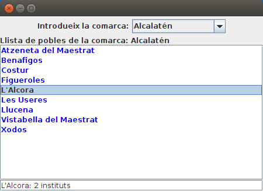
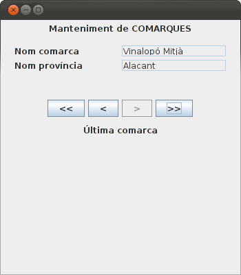
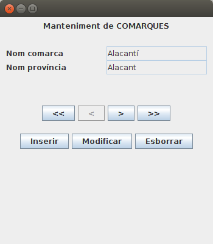
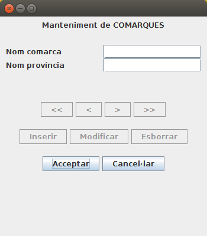
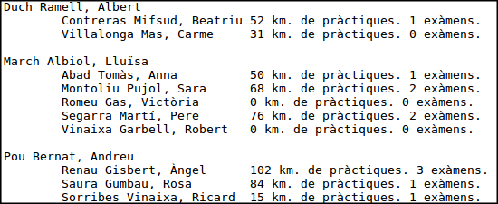

Exercicis
Exercici 5.1
Crea un projecte nou anomenat Tema5_PostgreSQL_Rutes. Inclou el driver JDBC de PostgreSQL i la llibreria nostra d'Hibernate.
- Fes el mapatge de les taules RUTA i PUNT, situades en la Base de Dades rutes a la qual pot accedir l'usuari rutes (contrasenya rutes) i situada en el servidor de l'Institut (89.36.214.106). Guarda-les en un paquet anomenat dades.
- Hauràs observat que ha creat les classes Ruta.java, Punt.java i també PuntId.java. Aquesta última l'ha creada perquè la clau principal de la taula PUNT està formada per num_r + num_p. No ens afectarà a nosaltres, que podem utilitzar únicament Ruta.java i Punt.java.
- Intenta visualitzar dades des de la perspectiva Hibernate.
- Copia't el fitxer log4j.properties per a que no es visualitzen els avisos.
- Crea't la classe SessionFactoryUtil, que serà un singleton per a poder crear una única SessionFactory. L'has d'utilitzar en totes les altres classes, sempre que et faça falta un SessionFactory. Ha d'estar en el mateix paquet dades.
- En un paquet anomenat Exercicis, crea't la classe VeureRutes, que serà un programa senzill que visualitze les rutes, i el número de punts, ordenades per nom de ruta. Ha de ser per mig d'una consulta HQL (el més senzilla possible), i evidentment el programa ha de ser independent del número de rutes existent en aquest moment a la Base de Dades. El resultat seria aquest:
Pelegrins de Les Useres - 6 punts
Pujada a Penyagolosa - 5 punts
Exercici 5.2
Sobre el projecte de Tema5_Hibernate_PostgreSQL_geo_ad , on tenim el mapatge de les taules COMARQUES, POBLACIONS i INSTITUTS, creeu-vos un paquet anomenat Exercicis, on col·locareu les classes d'aquest exercici.
Per a visualitzar les coses d'una forma un poc més agradable anem a utilitzar les llibreries gràfiques Java AWT i Javax Swing. Amb aquestes llibreries incorporarem:
- JPanel i JScrollPane, per a contenir altres objectes (aquest últim amb botons de scroll si són necessaris).
- JLabel, per a etiquetes
- JText, per a quadres de text (on poder posar informació)
- JTextArea, és un quadre de text, però més gran. Nosaltres l'utilitzarem per a visualitzar informació extensa, i per tant el farem no editable.
- JButton, per a botons. Estarà esperant a que l'apretem (ActionListener)
Tot açò anirà en una classe que anomenarem Pantalla_Veure_Pobles_Comarca que estendrà JFrame, i que implementarà ActionListener.
Haurem de tenir una classe principal, Veure_Pobles_Comarca.java, que únicament crearà un objecte Pantalla_Veure_Pobles_Comarca i l'iniciarà (mètode iniciar()), on col·locarem les primeres coses i prepararem el botó per a que escolte si s'apreta.
Per tant, tindrem una classe Veure_Pobles_Comarca.java tan senzilla com açò:
public class Veure_Pobles_Comarca {
public static void main(String[] args) {
final Pantalla_Veure_Pobles_Comarca finestra = new Pantalla_Veure_Pobles_Comarca();
finestra.iniciar();
}
}
I ara anem a per la classe Pantalla_Veure_Pobles_Comarca.java. Vosaltres haureu de completar el mètode VisualitzaCom(String comarca), per a que si no existeix la comarca, es diga que no existeix dins del JTextArea, i si existeix, que es vegen els seus pobles (si vols pots millorar-lo per a que es vegen en ordre alfabètic).
import java.awt.BorderLayout;
import java.awt.Color;
import java.awt.FlowLayout;
import java.awt.event.ActionEvent;
import java.awt.event.ActionListener;
import java.util.Arrays;
import javax.swing.JButton;
import javax.swing.JFrame;
import javax.swing.JLabel;
import javax.swing.JPanel;
import javax.swing.JScrollPane;
import javax.swing.JTextArea;
import javax.swing.JTextField;
public class Pantalla_Veure_Pobles_Comarca extends JFrame implements ActionListener {
private static final long serialVersionUID = 1L;
JLabel etiqueta = new JLabel("Comarca:");
JLabel et_ini = new JLabel("Introdueix la comarca:");
JTextField com = new JTextField(15);
JButton consultar = new JButton("Consultar");
JTextArea area = new JTextArea();
// en iniciar posem un contenidor per als elements anteriors
public void iniciar() {
this.setBounds(100, 100, 450, 300);
this.setLayout(new BorderLayout());
// contenidor per als elements
JPanel panell1 = new JPanel(new FlowLayout());
panell1.add(et_ini);
panell1.add(com);
panell1.add(consultar);
getContentPane().add(panell1,BorderLayout.NORTH);
JPanel panell2 = new JPanel(new BorderLayout());
panell2.add(etiqueta,BorderLayout.NORTH);
area.setForeground(Color.blue);
JScrollPane scroll = new JScrollPane(area);
panell2.add(scroll,BorderLayout.CENTER);
getContentPane().add(panell2,BorderLayout.CENTER);
setVisible(true);
consultar.addActionListener(this);
}
@Override
public void actionPerformed(ActionEvent e) {
if (e.getSource() == consultar) {
etiqueta.setText("Comarca: " + com.getText());
visualitzaCom(com.getText());
}
}
private void visualitzaCom(String comarca) {
// Instruccions per a llegir la comarca introduïda (s'ha de deixar en un objecte Comarques).
// S'ha de cuidar que si no exiteix la comarca, en el JTextArea es pose que no existeix.
// La manera d'anar introduint informació en el JTextArea és area.append("Linia que es vol introduir ")
}
}
Aquest seria un exemple d'utilització:

Exercici 5.3
Anem a fer unes quantes millores a l'exemple anterior. Copia't la classe Pantalla_Veure_Pobles_Comarca.java a aquesta altra: Pantalla_Veure_Pobles_Comarca_Combo_List.java
Les millores seran les següents:
- (70%) Substitueix el quadre de text per un JComboBox, i elimina el botó. Recorda que el component JCombBox funciona de la segünet manera:
- La manera de saber si ha estat el ComboBox qui ha provocat l'esdeveniment en el actionPerformed és idèntica que en el cas del botó: if (e.getSource()==nom_ComboBox)
- Per a obtenir l'element seleccionat utilitzarem el mètode .getSelectedItem()
- Per tant, per a omplir el ComboBox haurem de fer una consulta prèvia amb els noms de les comarques (en principi amb els noms és suficient). El resultat de la consulta pot ser un List de strings, ja que només volem el nom de la comarca. Aquesta llista la podem convertir en un array amb el mètode .toArray(), que és el que li fa falta al constructor del ComboBox. Però també podeu anar afegint elements al ComboBox amb el mètode .addItem()
- (15%) Substitueix el JTextArea on mostrem els pobles de la comarca per un JList. Aquest component serà una llista, i podrem seleccionar cada element de la llista. El seu funcionament és així:
- Per a anar omplint el JList, no és tant senzill com el JComboBox. Ens fa falta un DefaultListModel, i construir el JList a partir d'ell. Posteriorment afegirem elements al DefaultListModel, i això suposarà que es veuran en el JList.
- Per a agafar els pobles de la comarca, pot donar-se el cas que hi haja cometes simples en el nom (p.e. Plana d'Utiel). Açò faria que la consulta HQL falle (ja que la cometa simple és el delimitador de les constants de text). Una manera de solucionar-lo és utilitzar un paràmetre en un PreparedStatement, ja que d'aquesta manera no hi haurà problema amb les cometes. Una altra manera de solucionar-lo és posar dos cometes simples. Podem utilitzar el mètode replaceAll() de la classe String, substituint tota cometa simple per dues cometes simples. Si per exemple tenim el nom de la comarca en el String comarca, faríem:
comarca.replaceAll("'","''") :
- (15%) Quan se seleccione un element del JList, fes que es mostre baix de tot el número d'Instituts del poble seleccionat
- Per a poder controlar si s'ha seleccionat un element del JList la classe principal haurà d'implementar també ListSelectionListener, a banda del ActionListener. Prepararem que volem escoltar aquest esdeveniment amb area.addListSelectionListener(this); (si el JList s'anomena area, clar). Posteriorment sobreescriurem el mètode valueChanged(ListSelectionEvent e), que és on posarem les accions per a mostrar el nombre d'Instituts del poble.
- El nom del poble també pot dur cometes simples, per tant farem la mateixa consideració d'abans. Ho solucionem amb un paràmetre de PreparedStatement, o posar dues cometes simple substituint el nom del poble per:
poble.replaceAll("'","''") :
L'esquelet quedarà ara d'aquesta manera:
package Exercicis;
import java.awt.BorderLayout;
import java.awt.Color;
import java.awt.FlowLayout;
import java.awt.event.ActionEvent;
import java.awt.event.ActionListener;
import java.util.Arrays;
import java.util.List;
import javax.swing.DefaultListModel;
import javax.swing.JComboBox;
import javax.swing.JFrame;
import javax.swing.JLabel;
import javax.swing.JList;
import javax.swing.JPanel;
import javax.swing.JScrollPane;
import javax.swing.JTextField;
import javax.swing.event.ListSelectionEvent;
import javax.swing.event.ListSelectionListener;
import org.hibernate.Session;
import dades.*;
public class Pantalla_Veure_Pobles_Comarca_Combo_List extends JFrame implements ActionListener, ListSelectionListener {
private static final long serialVersionUID = 1L;
JLabel etiqueta = new JLabel("Comarca:");
JLabel et_ini = new JLabel("Introdueix la comarca:");
JComboBox com = new JComboBox();
DefaultListModel listModel = new DefaultListModel();
JList area = new JList(listModel);
JTextField peu = new JTextField();
// en iniciar posem un contenidor per als elements anteriors
public void iniciar() {
this.setBounds(100, 100, 450, 300);
this.setLayout(new BorderLayout());
// contenidor per als elements
JPanel panell1 = new JPanel(new FlowLayout());
panell1.add(et_ini);
panell1.add(com);
getContentPane().add(panell1,BorderLayout.NORTH);
JPanel panell2 = new JPanel(new BorderLayout());
panell2.add(etiqueta,BorderLayout.NORTH);
area.setForeground(Color.blue);
JScrollPane scroll = new JScrollPane(area);
panell2.add(scroll,BorderLayout.CENTER);
getContentPane().add(panell2,BorderLayout.CENTER);
getContentPane().add(peu,BorderLayout.SOUTH);
agafarComarques();
setVisible(true);
com.addActionListener(this);
area.addListSelectionListener(this);
}
@Override
public void actionPerformed(ActionEvent e) {
if (e.getSource() == com) {
etiqueta.setText("Llista de pobles de la comarca: " + com.getSelectedItem());
visualitzaCom(com.getSelectedItem().toString());
}
}
@Override
public void valueChanged(ListSelectionEvent e){
JList l = (JList) e.getSource();
if (l.getSelectedIndex()>=0){
visualitzaInstituts(l.getSelectedValue().toString());
}
}
private void visualitzaCom(String comarca) {
// Instruccions per a llegir la comarca introduïda (s'ha de deixar en un objecte Comarques).
// S'ha de cuidar que si no exiteix la comarca, en el JList es pose que no existeix.
// La manera d'anar introduint informació en el JList és a través del DefaultListModel:
// listModel.addElement("Linia que es vol introduir ")
// Una manera de solucionar el problema de la cometa simple és utilitzar comarca.replaceAll("'","''").
// Una altra és utilitzar paràmetres amb PreparedStatement
}
private void agafarComarques(){
// Instruccions per a posar en el ComboBox el nom de totes les comarques, millor si és per ordre alfabètic
}
private void visualitzaInstituts(String poble){
// Instruccions per a mostrar el número d'Instituts del poble seleccionat
// Una manera de solucionar el problema de la cometa simple és utilitzar poble.replaceAll("'","''").
// Una altra és utilitzar paràmetres amb PreparedStatement
}
}
Aquest seria un exemple d'execució:

Exercici 5.4
Anem a intentar un programa per al manteniment de les comarques (no intentarem mantenir els pobles de la comarca, únicament el nom i la província de la comarca). L'anomenarem Manteniment_Comarques al principal, i Manteniment_Comarques_Pantalla al que ho contindrà tot i estendrà de JPanel. Ambdós han d'estar en el paquet Exercicis del projecte Tema5_Hibernate_PostgreSQL_geo_ad.
En una primera fase únicament posarem 2 quadres de text per al nom i la província (amb 2 etiquetes) i 4 botons per a desplaçar-nos: al primer, a l'anterior, al següent i a l'últim.

Ves fent progressivament les següents coses:
- Organitza les diferents seccions en diferents JPanels.
- Per a que queden aliniats els JLabel i JTextField, segurament el més senzill és col·locar-los en un JPanel d'estil GridLayout, amb 2 columnes: JPanel panell2 = new JPanel(new GridLayout(2,2,5,5));
- Col·loca els JLabel i JText necessaris en el JPanel anterior.
- Posa en una llista de Comarques tots els objectes de les comarques (per mig d'una consulta HQL). Inicialment situa't en la primera.
- Posa i implementa els 4 botons de desplaçament.
- Controla que no es puga eixir fora del rang deshabilitant els botons corresponents quan s'estiga en la primera o l'última comarca. No t'oblides d'habilitar-los quan toque. Opcionalment pots posar una etiqueta que diga si s'està en la primera o última comarca.
Ací tens el programa principal, així com "l'esquelet" del JFrame. Observa que la sessió està creada en la zona de declaracions de les propietats. Podríem haver-la creat en el mètode afafarComarques(), que és quan per mig d'una sentència HQL agafarem totes les comarques i les posarem en un ListArray<Comarques>. D'aquesta manera podríem tancar la sessió en el mateix mètode agafarComarques() i no utilitzar més recursos dels necessaris. Hem optat per tenir la sessió oberta durant tota la durada del programa per fer-lo igual que en el següent exercici, en el qual sí que ens convé tenir la sessió oberta mentre dure el programa. Observeu també que a banda de llistaComarques, l'arraylist on estan tots els objectes comarques, també tenim la propietat indActual, on guardem l'índex actual, és a dir, l'índex de la comarca que s'ha d'estar visualitzant en aquest moment.
package Exercicis;
public class Manteniment_Comarques {
public static void main(String[] args) {
Manteniment_Comarques_Pantalla finestra = new Manteniment_Comarques_Pantalla();
finestra.iniciar();
}
}
package Exercicis;
import java.awt.BorderLayout;
import java.awt.FlowLayout;
import java.awt.GridLayout;
import java.awt.event.ActionEvent;
import java.awt.event.ActionListener;
import java.util.ArrayList;
import javax.swing.JButton;
import javax.swing.JFrame;
import javax.swing.JLabel;
import javax.swing.JPanel;
import javax.swing.JTextField;
import org.hibernate.Query;
import org.hibernate.Session;
import Exemples.SessionFactoryUtil;
import dades.Comarca;
public class Manteniment_Comarques_Pantalla extends JFrame implements ActionListener{
JLabel etIni= new JLabel("Manteniment de COMARQUES");
JLabel etNom= new JLabel("Nom comarca");
JLabel etProv= new JLabel("Nom província");
JTextField nomComarca = new JTextField();
JTextField nomProvincia= new JTextField();
JButton primer = new JButton("<<");
JButton anterior = new JButton("<");
JButton seguent = new JButton(">");
JButton ultim = new JButton(">>");
JPanel pDalt = new JPanel(new FlowLayout());
JPanel pCentre = new JPanel(new GridLayout(8,0));
JPanel pDades = new JPanel(new GridLayout(2,2));
JPanel pBotonsMov = new JPanel(new FlowLayout());
Session s = SessionFactoryUtil.getSessionFactory().openSession();
ArrayList<Comarca> llistaComarques = new ArrayList<Comarca>();
int indActual=0;
public void iniciar(){
this.setBounds(100, 100, 350, 400);
this.setLayout(new BorderLayout());
this.getContentPane().add(pCentre, BorderLayout.CENTER);
this.getContentPane().add(new JPanel(new FlowLayout()), BorderLayout.WEST);
this.getContentPane().add(new JPanel(new FlowLayout()), BorderLayout.EAST);
pDalt.add(etIni);
pCentre.add(pDalt);
pDades.add(etNom);
pDades.add(nomComarca);
pDades.add(etProv);
pDades.add(nomProvincia);
pCentre.add(pDades);
nomComarca.setEditable(false);
nomProvincia.setEditable(false);
pCentre.add(new JPanel(new FlowLayout()));
pBotonsMov.add(primer);
pBotonsMov.add(anterior);
pBotonsMov.add(seguent);
pBotonsMov.add(ultim);
pCentre.add(pBotonsMov);
pCentre.add(new JPanel(new FlowLayout()));
llistaComarques = agafarComarques();
visComarca(indActual);
this.setVisible(true);
this.setDefaultCloseOperation(EXIT_ON_CLOSE);
primer.addActionListener(this);
anterior.addActionListener(this);
seguent.addActionListener(this);
ultim.addActionListener(this);
}
private void visComarca(int index) {
// Mètode per a visualitzar la comarca marcada per l'índex que ve com a paràmetre
// Es pot aprofitar per a activar/desactivar els botons anterior i següent, si s'està en la primera o última comarca
}
private ArrayList<Comarca> agafarComarques() {
ArrayList<Comarca> llista = null;
// ací aniran les sentències per a omplir (i retornar) la llista de comarques
return llista;
}
@Override
public void actionPerformed(ActionEvent e) {
//ací aniran les accions de moviment primer, anterior, següent i últim
if (e.getSource()==primer){
}
if (e.getSource()==anterior){
}
if (e.getSource()==seguent){
}
if (e.getSource()==ultim){
}
}
}
Exercici 5.5 (voluntari)
Modifica l'anterior construint Manteniment_Comarques_Avançat_Pantalla per a posar també botons per a Inserir noves comarques, esborrar o modificar. En un primer moment aquestos botons prepararan l'acció, però no la realitzaran.

- Col·loca primer els 3 botons.
- Quan s'aprete (qualsevol dels 3) es visualitzaran uns altres dos (ja creats, ara es visualitzaran) que seran els d'Acceptar i Cancel·lar. A més d'aixó:
- el d'inserir ha de netejar els quadres de text i si havíeu posat els quadres de text com a que no es puguen editar, doncs ara que sí.
- el de modificar ha de permetre l'edició de la província (si no ho estava)
- En apretar Cancel·lar, s'ha de tornar a l'estat anterior, i fer invisibles els botons d'Acceptar i Cancel·lar.
- En apretar Acceptar, s'ha de distingir quina acció s'està fent, inserir, esborrar o modificar, i realitzar tal acció en la Base de Dades. Posteriorment s'hauran de fer invisibles els botons d'Acceptar i Cancel·lar
- Seria molt útil que en quan s'està fent una actualització (Inserir, Modificar o Esborrar), es desactiven tant els botons de moviment com d'actualització. En apretar Acceptar o Cancel·lar a més de fer les accions citades abans, s'haurien de tornar a activar els botons de moviment i d'actualització.

Ací està "l'esquelet" del JFrame. Podeu utilitzar el mateix programa principal.
package Exercicis;
import java.awt.BorderLayout;
import java.awt.FlowLayout;
import java.awt.GridLayout;
import java.awt.event.ActionEvent;
import java.awt.event.ActionListener;
import java.util.ArrayList;
import javax.swing.JButton;
import javax.swing.JFrame;
import javax.swing.JLabel;
import javax.swing.JOptionPane;
import javax.swing.JPanel;
import javax.swing.JTextField;
import org.hibernate.Query;
import org.hibernate.Session;
import org.hibernate.Transaction;
import dades.SessionFactoryUtil;
import dades.Comarca;
public class Manteniment_Comarques_Avançat_Pantalla extends JFrame implements ActionListener{
JLabel etIni= new JLabel("Manteniment de COMARQUES");
JLabel etNom= new JLabel("Nom comarca");
JLabel etProv= new JLabel("Nom província");
JTextField nomComarca = new JTextField();
JTextField nomProvincia= new JTextField();
JButton primer = new JButton("<<");
JButton anterior = new JButton("<");
JButton seguent = new JButton(">");
JButton ultim = new JButton(">>");
JButton inserir = new JButton("Inserir");
JButton modificar = new JButton("Modificar");
JButton esborrar = new JButton("Esborrar");
JButton acceptar = new JButton("Acceptar");
JButton cancelar = new JButton("Cancel·lar");
JPanel pDalt = new JPanel(new FlowLayout());
JPanel pCentre = new JPanel(new GridLayout(8,0));
JPanel pDades = new JPanel(new GridLayout(2,2));
JPanel pBotonsMov = new JPanel(new FlowLayout());
JPanel pBotonsAct = new JPanel(new FlowLayout());
JPanel pBotonsAccCanc = new JPanel(new FlowLayout());
Session s = SessionFactoryUtil.getSessionFactory().openSession();
ArrayList<Comarca> llistaComarques = new ArrayList<Comarca>();
int indActual=0;
String accio=null;
public void iniciar(){
this.setBounds(100, 100, 350, 400);
this.setLayout(new BorderLayout());
this.getContentPane().add(pCentre, BorderLayout.CENTER);
this.getContentPane().add(new JPanel(new FlowLayout()), BorderLayout.WEST);
this.getContentPane().add(new JPanel(new FlowLayout()), BorderLayout.EAST);
pDalt.add(etIni);
pCentre.add(pDalt);
pDades.add(etNom);
pDades.add(nomComarca);
pDades.add(etProv);
pDades.add(nomProvincia);
pCentre.add(pDades);
nomComarca.setEditable(false);
nomProvincia.setEditable(false);
pCentre.add(new JPanel(new FlowLayout()));
pBotonsMov.add(primer);
pBotonsMov.add(anterior);
pBotonsMov.add(seguent);
pBotonsMov.add(ultim);
pCentre.add(pBotonsMov);
pBotonsAct.add(inserir);
pBotonsAct.add(modificar);
pBotonsAct.add(esborrar);
pCentre.add(pBotonsAct);
pBotonsAccCanc.add(acceptar);
pBotonsAccCanc.add(cancelar);
pCentre.add(pBotonsAccCanc);
pBotonsAccCanc.setVisible(false);
pCentre.add(new JPanel(new FlowLayout()));
llistaComarques = agafarComarques();
visComarca(indActual);
this.setVisible(true);
this.setDefaultCloseOperation(EXIT_ON_CLOSE);
primer.addActionListener(this);
anterior.addActionListener(this);
seguent.addActionListener(this);
ultim.addActionListener(this);
inserir.addActionListener(this);
modificar.addActionListener(this);
esborrar.addActionListener(this);
acceptar.addActionListener(this);
cancelar.addActionListener(this);
}
private void visComarca(int index) {
// Mètode per a visualitzar la comarca marcada per l'índex que ve com a paràmetre
// Es pot aprofitar per a activar/desactivar els botons anterior i següent, si s'està en la primera o última comarca
}
private ArrayList<Comarca> agafarComarques() {
ArrayList<Comarca> llista = null;
// ací aniran les sentències per a omplir (i retornar) la llista de comarques
return llista;
}
@Override
public void actionPerformed(ActionEvent e) {
//ací aniran les accions de moviment primer, anterior, següent i últim
if (e.getSource()==primer){
}
if (e.getSource()==anterior){
}
if (e.getSource()==seguent){
}
if (e.getSource()==ultim){
}
if (e.getSource()==inserir){
}
if (e.getSource()==modificar){
}
if (e.getSource()==esborrar){
}
if (e.getSource()==acceptar){
}
if (e.getSource()==cancelar){
}
}
private int BuscaCom(String text) {
// Busca la comarca passada com a paràmetre en llistaComarques, tornant el seu índex. Per a situar-se després d'una inserció.
int ind =0;
// Ací haurien d'anar les sentències
return ind;
}
private void activarBotons(boolean b) {
//Mètode per activar o desactivar (segons el paràmetre) els botons de moviment i també els d'actualització
}
}
Exercici 5.6 (voluntari)
Crea un projecte nou anomenat Tema5_PostgreSQL_Autoescola. Inclou el driver JDBC de PostgreSQL i la llibreria nostra d'Hibernate.
- Fes el mapatge de totes les taules, situades en la Base de Dades autoescola a la qual pot accedir l'usuari autoescola (contrasenya autoescola) i situada en el servidor de l'Institut (89.36.214.106). Guarda-les en un paquet anomenat dades. El mapatge serà de 5 taules: ALUMNE, EXAMEN, PRACTIQUES, PROFESSOR i VEHICLE.
- Crea't la classe SessionFactoryUtil, que serà un singleton per a poder crear una única SessionFactory. L'has d'utilitzar en totes les altres classes, sempre que et faça falta un SessionFactory. Ha d'estar en el mateix paquet dades.
- En un paquet anomenat Exercicis, crea't la classe ConsultaAutoescola, que serà un programa senzill que visualitzarà els professors de l'autoescola i els seus alumnes, ordenats pel nom del professor. Completarem la informació amb els quilòmetres realitzats pels alumnes en la totalitat de les seues pràctiques i el número d'exàmens que ha realitzat. El resultat seria aquest:

Llicenciat sota la Llicència Creative Commons Reconeixement NoComercial CompartirIgual 2.5